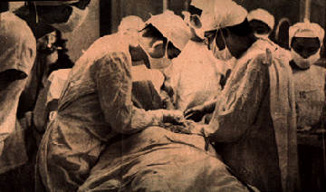
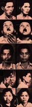

Presiding over the operating table, Dr. Jaime Laico (right) applies latest surgical know-how on PGH patient.
THIS WEEK
December 23, 1951
Surgery Plus Time Equals
A NEW FACE
Nature's flaws get some mending from a UNICEF fellow
MOTHER NATURE, in her unpredictable ways, can at times be both generous and
unkind. The mutants of the plant kingdom have given us bigger fruits,
more resistant species, lovelier flowers. In the animal kingdom, however,
the freaks -- harelips, Siamese twins, dwarfs, hunchbacks, etc. -- are forced
to live a life apart from their normal brethren in a world where inferiority
complex is the rule. Here, man's ingenuity steps in to help relieve
some of the anguish -- help some of the victims meet the world with literally
a new face.
The UNICEF, in its preoccupation of restoring happiness to children victimized by the war, has found it a part of its program to aid children deformed either by the freakishness of nature or by accidents. Lately, in this country the UNICEF granted a fellowship for plastic surgery to Dr. Jaime Laico, who was chosen after a thorough screening, to study under the foremost plastic surgeons of the U.S., England, and Italy.
On this spread, This Week has compiled pictorally, through the good offices of the UNICEF, sample works to prove how far we have advanced in the field of plastic surgery. This science of tissue transplanting employs two methods: the direct method (wherein the skin is transplanted to cover raw areas or burns that heal in twelve days) and the indirect method (this adapts the so called "stage" process, see pictures below, which utilizes not only the outermost layer of the skin but the whole thickness of the skin including the fat). The indirect method consumes months before completion.
(LINK
TO SEVERAL IMAGES)
(LINK TO SEVERAL IMAGES)